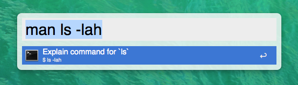

View on GitHub
Manpages.alfredworkflow
Alfred 2 workflow for searching manpages
Download this project as a .zip file
Download this project as a tar.gz file
Alfred 2 workflow for Manpages

Download!
Requires
Alfred 2 and the Powerpack
.
Updates can be found and installed using
Alleyoop
.